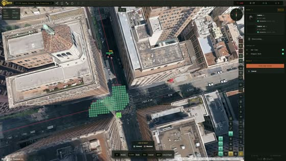

You place towers, upgrade them between waves and hold the base. That part is an ordinary tower defense. The ground is the variable, and a layout that works on one street rarely transfers to the next.
The map isn't authored, it's streamed from Google's Photorealistic 3D Tiles. Routing, line of sight and placement all read that geometry.
Routes follow real streets
The street graph comes from OpenStreetMap, the thin yellow lines in the picture. The cyan patches are building footprints from the same source. Ground enemies take the red route along those streets, flyers the magenta one straight across. Every waypoint of the ground route is raycast down onto the tile surface for its height, so it follows the actual terrain.
Buildings block line of sight
A tower only fires at what it can see. The surrounding tiles are rendered into a cubemap once, the depth is read back, and the result is kept as a visibility mask over the tower's range. Green cells are covered, red ones are blocked by a building.

Placement probes the ground
Towers are set by raycasting against the tiles, not against a flat plane. Rooftops, embankments and bridges sit at their real height, which is why the same layout plays differently two streets over.
Forty seconds of unedited play in a residential street, debug windows open: the line of sight cubemap on the left, the frame budget beside it, the wave spawner below.